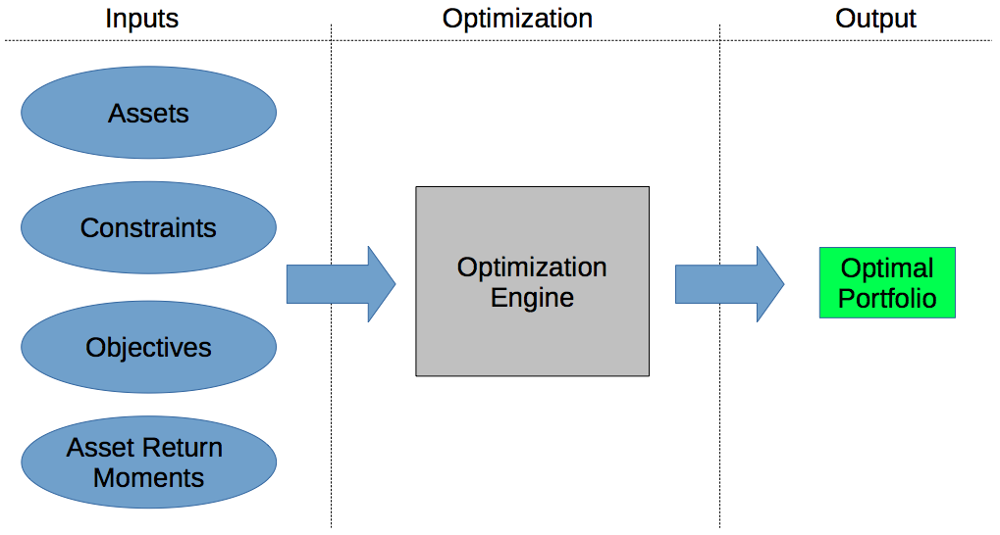
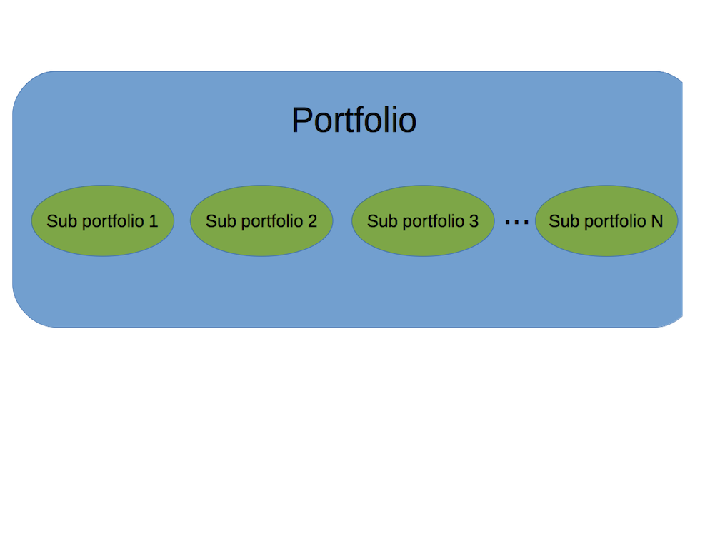
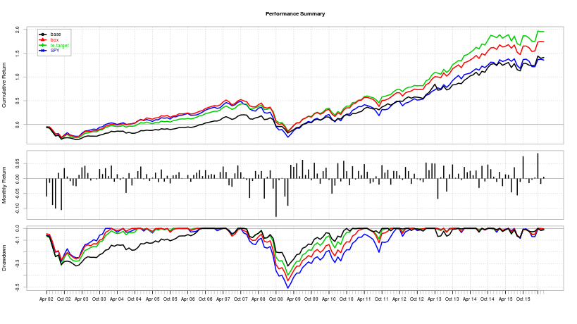
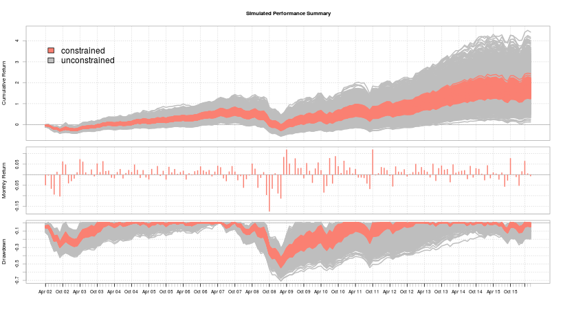
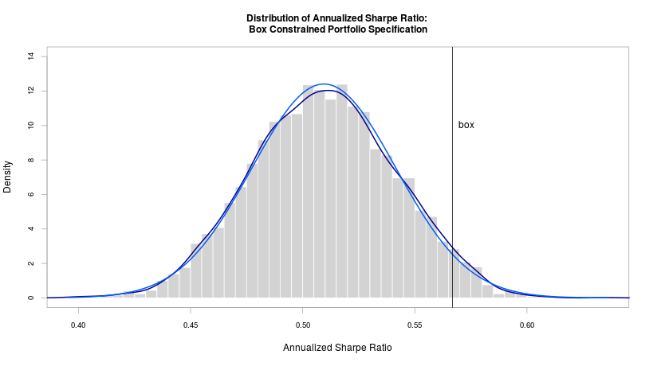

- Discuss Portfolio Optimization
- Introduce PortfolioAnalytics
- Demonstrate PortfolioAnalytics with Examples
PortfolioAnalytics Tutorial
R/Finance 2017
Ross Bennett
Overview
Modern Portfolio Theory
"Modern" Portfolio Theory (MPT) was introduced by Harry Markowitz in 1952.
In general, MPT states that an investor's objective is to maximize portfolio expected return for a given amount of risk.
Common Objectives
- Maximize a measure of gain per unit measure of risk
- Minimize a measure of risk
How do we define risk? What about more complex objectives and constraints?
Portfolio Optimization Objectives
- Minimize Risk
- Volatility, Tail Loss (VaR, ES), Max Drawdown, etc.
- Maximize Risk Adjusted Return
- Sharpe Ratio, Information Ratio, etc.
- Risk Budgets
- Equal Component Contribution to Risk (i.e. Risk Parity)
- Limits on Component Contribution
- Maximize a Utility Function
- Quadratic, Constant Relative Risk Aversion (CRRA), etc.
- Minimize Tracking Error
- replicating portfolio to track an index or basket of assets
Challenges of Portfolio Optimization in R
- Many solvers are not specific to portfolio optimization
- Understanding the capabilities and limits of solvers to select the appropriate solver for the problem or formulate the problem to fit the solver.
- Lack of a common interface to a wide range of solvers in R, difficult to switch between solvers.
- Closed-Form vs. Global Solvers
PortfolioAnalytics Overview
PortfolioAnalytics is an R package designed to provide numerical solutions and visualizations for portfolio optimization problems with complex constraints and objectives.
Supports:
- multiple constraint and objective types
- modular constraints and objectives
- an objective function can be any valid R function
- user defined moment functions (e.g. covariance matrix, return projections)
- visualizations
- solver agnostic
- parallel computing
PortfolioAnalytics Framework

Workflow: Specify Portfolio
p <- portfolio.spec(assets = c('AAPL', 'MSFT', 'GOOG'))
print(p)
## **************************************************
## PortfolioAnalytics Portfolio Specification
## **************************************************
##
## Call:
## portfolio.spec(assets = c("AAPL", "MSFT", "GOOG"))
##
## Number of assets: 3
## Asset Names
## [1] "AAPL" "MSFT" "GOOG"
Initializes the portfolio object that holds portfolio level data, constraints, and objectives
Workflow: Add Constraints
# weights sum to 1
p <- add.constraint(portfolio = p, type = 'weight_sum',
min_sum = 1, max_sum = 1)
# special type for full investment constraint
# add.constraint(portfolio = p, type = 'full_investment')
# box constraints
p <- add.constraint(portfolio = p, type = 'box',
min = 0.2, max = 0.6)
Supported Constraint Types
- Sum of Weights
- Box, Group
- Factor Exposure
- Position Limit
- and many more
Workflow: Add Objectives
p <- add.objective(portfolio = p, type = 'risk', name = 'StdDev')
Supported Objective types
- Return
- Risk
- Risk Budget
- Weight Concentration
Workflow: Run Optimization
opt <- optimize.portfolio(R, portfolio = p, optimize_method = 'random',
search_size = 2000)
opt.rebal <- optimize.portfolio.rebalancing(R, portfolio = p,
optimize_method = 'random',
search_size = 2000,
rebalance_on = 'quarters',
training_period = 60,
rolling_window = 60)
Workflow: Analyze Results
| Visualization | Data Extraction |
|---|---|
| plot | extractObjectiveMeasures |
| chart.Concentration | extractStats |
| chart.EfficientFrontier | extractWeights |
| chart.RiskReward | |
| chart.RiskBudget | summary |
| chart.Weights |
Support Multiple Solvers
Linear and Quadratic Programming Solvers
- R Optimization Infrastructure (ROI)
- GLPK (Rglpk)
- Symphony (Rsymphony)
- Quadprog (quadprog)
Global Solvers
- Random Portfolios
- Differential Evolution (DEoptim)
- Particle Swarm Optimization (pso)
- Generalized Simulated Annealing (GenSA)
Random Portfolios
PortfolioAnalytics has three methods to generate random portfolios.
- The sample method to generate random portfolios is based on an idea by Pat Burns.
- The simplex method to generate random portfolios is based on a paper by W. T. Shaw.
- The grid method to generate random portfolios is based on the
gridSearchfunction in the NMOF package.
Comparison of Random Portfolio Methods (Interactive!)
/home/rbennett/R/x86_64-pc-linux-gnu-library/3.0/rCharts/libraries/nvd3/layouts/chart.html
Random Portfolios: Simplex Method

Hierarchical (i.e. Multilayer) Optimization

Regime Switching Model
- Define a model to characterize
nregimes - Define
nportfolio specifications, 1 for each regime
Estimating Moments
Ledoit and Wolf (2003):
"The central message of this paper is that nobody should be using the sample covariance matrix for the purpose of portfolio optimization."
- Sample
- Shrinkage Estimators
- Factor Model
- Expressing Views
- See Custom Moment and Objective Functions vignette
Example: U.S. Equity Sector ETF Portfolio
Consider a long only U.S. Equity portfolio allocation problem
Data
- Monthly returns of 9 U.S. Equity Sector ETFs from 1999 to May 2016
- Source: Yahoo
Approach
- Baseline portfolio
- Box constraints
- Custom objective function
- Analysis
Goal is to outperform the S&P 500 (SPY as a proxy)
Baseline Portfolio Specification
Baseline portfolio specification to minimize portfolio standard deviation, subject to full investment and long only constraints.
# base portfolio specification
p <- portfolio.spec(assets = colnames(R),
weight_seq = generatesequence(min = 0, max = 1, by = 0.002))
p <- add.constraint(portfolio = p, type = 'weight_sum',
min_sum = 0.99, max_sum = 1.01)
p <- add.constraint(portfolio = p, type = 'box', min = 0, max = 1)
p <- add.objective(portfolio = p, type = 'return', name = 'mean', multiplier = 0)
p <- add.objective(portfolio = p, type = 'risk', name = 'StdDev')
Box Constraints
Add box constraints such that for each asset the minimum weight is 5% and the maximum weight is 20%.
- copy the baseline portfolio specification
- replace the second index of the constraint object
# portfolio specification with box constraints
p.box <- p
p.box <- add.constraint(portfolio = p.box, type = 'box',
min = 0.05, max = 0.20, indexnum = 2)
Single Period Optimization
Run a single period optimization for the portfolio specifications
# generate the random portfolios
rp <- random_portfolios(portfolio = p, permutations = rp.n, method = 'sample')
rp <- normalize.weights(rp)
rp.box <- random_portfolios(portfolio = p.box, permutations = rp.n, method = 'sample')
rp.box <- normalize.weights(rp.box)
# run the optimizations
opt.base <- optimize.portfolio(R = tail(R, 36), portfolio = p, rp = rp,
optimize_method = 'random', trace = TRUE)
opt.box <- optimize.portfolio(R = tail(R, 36), portfolio = p.box, rp = rp.box,
optimize_method = 'random', trace = TRUE)
Feasible Space Comparison
Impact of box constraints on the feasible space of the in sample period.

Optimization with Periodic Rebalancing
opt.base.rebal <- optimize.portfolio.rebalancing(R = R, portfolio = p,
optimize_method = 'random',
rp = rp, trace = TRUE,
rebalance_on = 'quarters',
training_period = 36,
rolling_window = 36)
opt.base.rebal.r <- Return.portfolio(R, weights = extractWeights(opt.base.rebal))
colnames(opt.base.rebal.r) <- 'base'
opt.box.rebal <- optimize.portfolio.rebalancing(R = R, portfolio = p.box,
optimize_method = 'random',
rp = rp.box, trace = TRUE,
rebalance_on = 'quarters',
training_period = 36,
rolling_window = 36)
opt.box.rebal.r <- Return.portfolio(R, weights = extractWeights(opt.box.rebal))
colnames(opt.box.rebal.r) <- 'box'
Baseline Optimal Weights
chart.Weights(opt.base.rebal, main = 'Baseline Portfolio Optimal Weights')

Box Constrained Optimal Weights
chart.Weights(opt.box.rebal, main = 'Box Constrained Portfolio Optimal Weights')

Baseline and Constrained Performance Summary
opt.r <- cbind(opt.base.rebal.r, opt.box.rebal.r)
charts.PerformanceSummary(opt.r, main = "Performance Summary")

Tracking Error Custom Objective Function
Define a custom objective function for penalized tracking error
te.target <- function(R, weights, Rb, min.te = 0.02, max.te = 0.05, scale = 12){
r <- Return.portfolio(R = R, weights = weights)
Rb <- Rb[index(r)]
te <- sd(r - Rb) * sqrt(scale)
# penalize tracking error outside of [min.te, max.te] range
out <- 0
if(te > max.te)
out <- (te - max.te) * 10000
if(te < min.te)
out <- (min.te - te) * 10000
out
}
Tracking Error Target Optimization
- Add tracking error as an objective to the baseline portfolio specification
- Specify the arguments to
te.targetas a named list - Target an Annualized Tracking Error in the range of 3% to 5%
p.te <- p
p.te <- add.objective(portfolio = p, type = 'risk', name = 'te.target',
arguments = list(Rb = R.mkt, scale = 12,
min.te = 0.03, max.te = 0.05))
opt.te.rebal <- optimize.portfolio.rebalancing(R = R, portfolio = p.te,
optimize_method = 'random',
rp = rp, trace = TRUE,
rebalance_on = rebal.period,
training_period = n.train,
rolling_window = n.roll)
opt.te.rebal.r <- Return.portfolio(R, weights = extractWeights(opt.te.rebal))
colnames(opt.te.rebal.r) <- 'te.target'
Tracking Error Target Performance Summary
opt.r <- na.omit(cbind(opt.base.rebal.r, opt.box.rebal.r, opt.te.rebal.r, R.mkt))
charts.PerformanceSummary(opt.r, main = "Performance Summary")

Portfolio Simulation and Analysis
- Random portfolios to simulate portfolios of zero skill managers
- Feasible portfolios by construction
- Monte Carlo requires a model specification
- Time series dependency with bootstrap
- No guarantee of a feasible portfolio with bootstrap or Monte Carlo Simulation
Simulate Portfolio Returns
Simulate portfolio returns using the random portfolios generated from the baseline portfolio specification and box constrained portfolio specification.
sim.base <- simulate.portfolio(R, rp = rp, simulations = 5000,
rebalance_on = 'quarters')
sim.box <- simulate.portfolio(R, rp = rp.box, simulations = 5000,
rebalance_on = 'quarters')
sim <- cbind(sim.box, sim.base)
charts.PerformanceSummary(sim, colorset = c(rep("salmon", ncol(sim.box)),
rep('gray', ncol(sim.base))),
legend.loc = NULL, main = "Simulated Performance Summary")
legend('topleft', legend = c('constrained', 'unconstrained'),
fill = c('salmon', 'gray'), bty = 'n')
Simulated Portfolio Performance Summary

Simulated vs. Optimal Portfolios: Sharpe Ratio Distribution

Simulated vs. Optimal Portfolios: Sharpe Ratio Distribution

Simulated vs. Optimal Portfolios: Tracking Error Distribution

Improvements
- Risk Measures
- Expected Shortfall
- Component contribution to risk (i.e. Risk Budgeting)
- Better Estimates
- Factor Model
- GARCH
- Return Forecasts
- More Data
- Weekly or daily frequency
- downsampling to monthly frequency "throws away" a lot of data
- Estimates based on higher frequency data
Conclusion
- Introduced the goals and summary of PortfolioAnalytics
- Demonstrated the flexibility through examples
- Plans for continued development
- Interface to \(parma\)
- Additional solvers
- "Gallery" of examples
Acknowledgements
Many thanks to...
- Google: funding Google Summer of Code (GSoC) for 2013 and 2014
- GSoC Mentors: Brian Peterson, Peter Carl, Doug Martin, and Guy Yollin
- R/Finance Committee
PortfolioAnalytics Links
Source code for the slides
and view it here
DataCamp Course